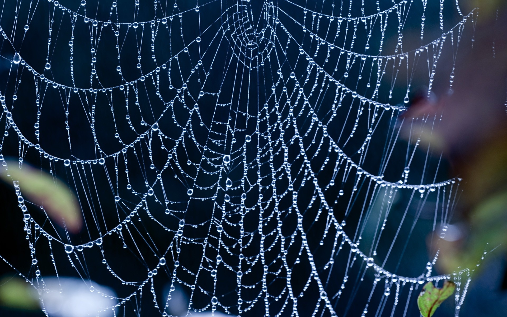
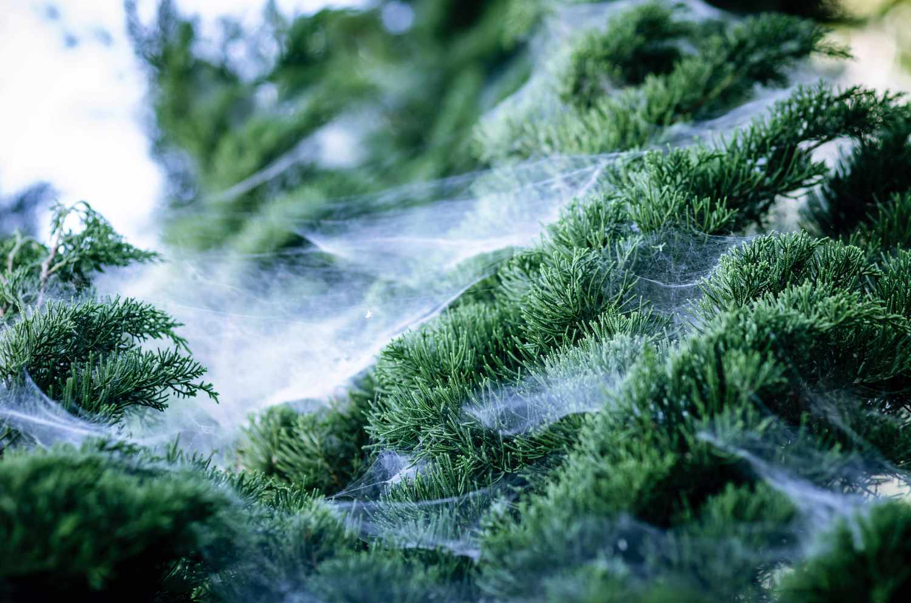
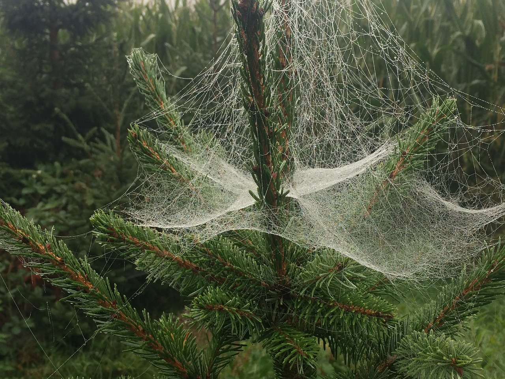
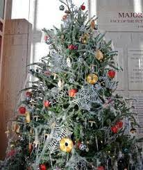

Cought in a web
One of Ukraine's favourite festive traditions is not one for those with a fear of creepy crawlies! Where we would have baubles, tinsel and stars, Ukrainians use decorations that mimic the natural formation of spiders' webs shimmering with dew. The tradition goes back to a folktale about a poor widow who could not afford to decorate a tree for her children. Legend has it that spiders in the house took pity on the family, and spun beautiful webs all over the tree, which the children awoke to find on Christmas morning. Spiders' webs are also considered to be lucky in Ukrainian culture.
   